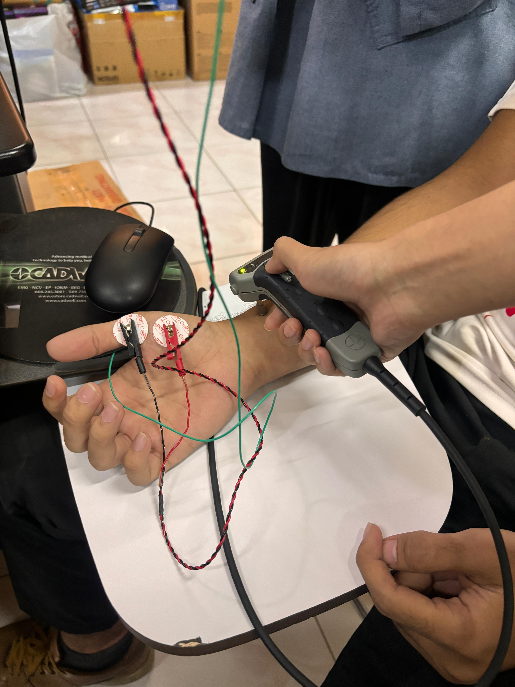
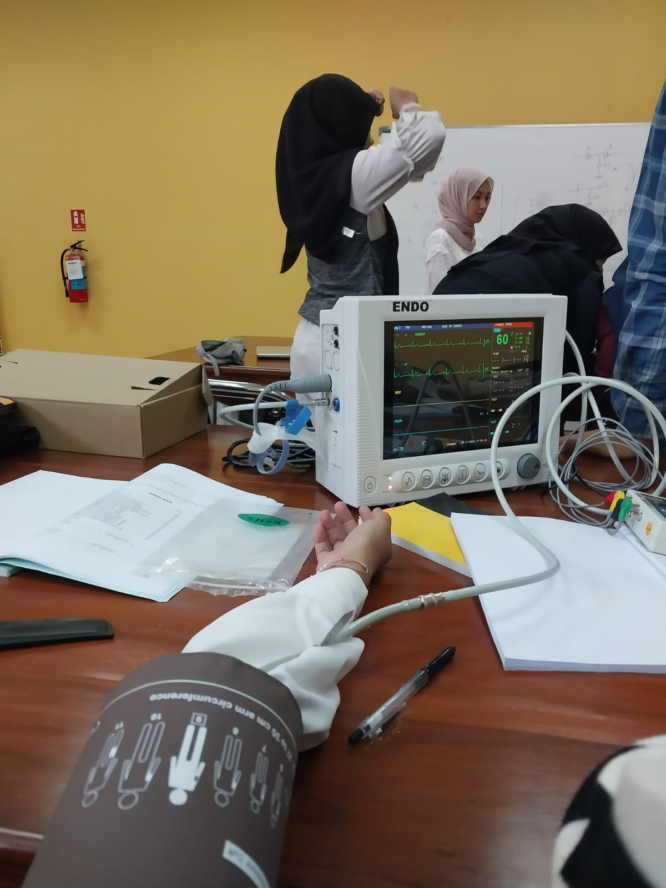
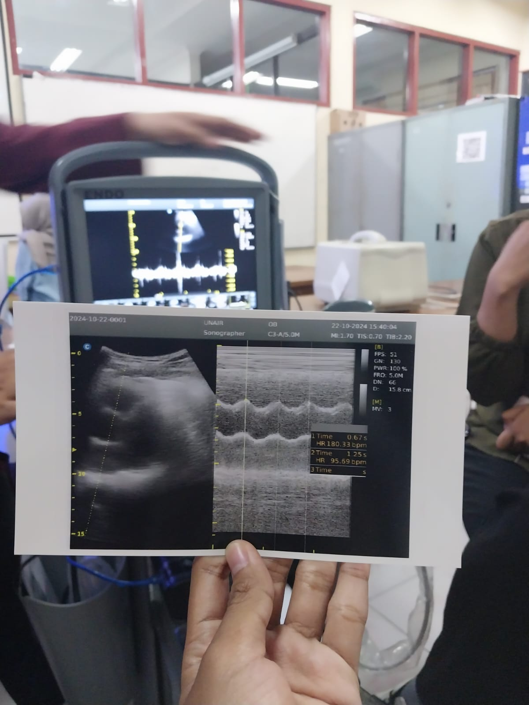
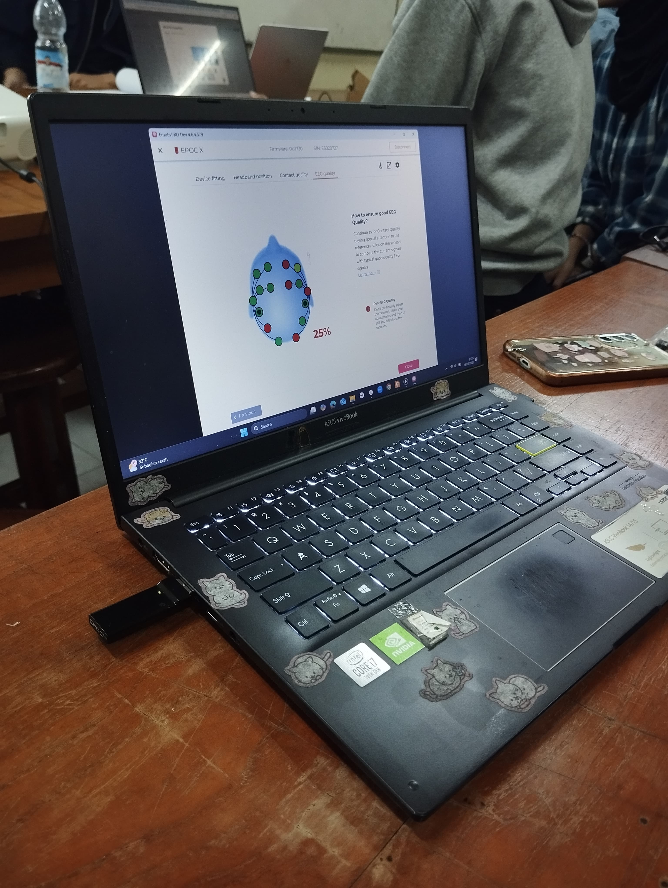
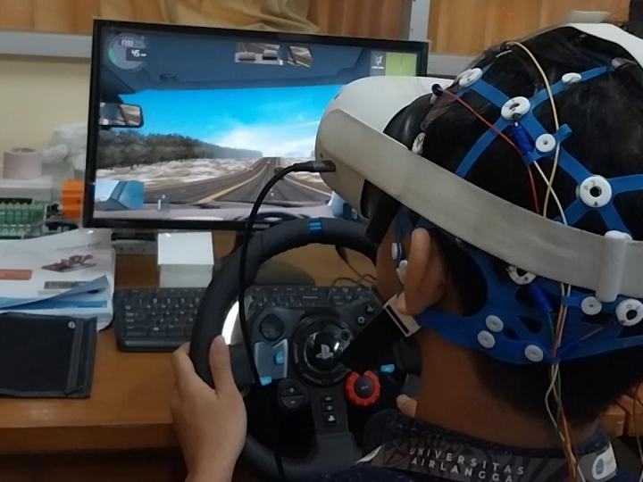
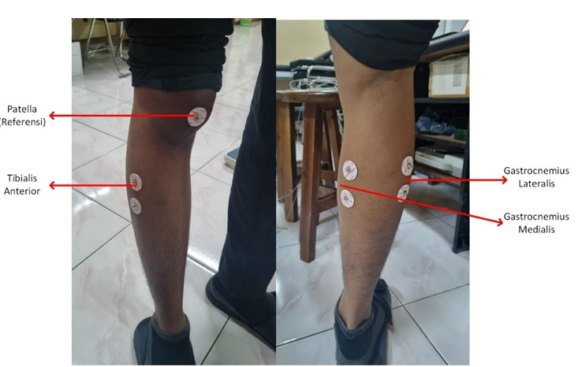

Technical Experiences






Biomedical Engineering Laboratory
- Overview:
- Successfully delivered training and demonstrations to over 75 students in the operation of clinical diagnostic equipment, including Ultrasound (USG), Electrocardiography (ECG), Electromyography (EMG), Nerve Conduction Velocity (NCV), and Electroencephalography (EEG), mirroring the process of educating clinical users on products.
- Developed evaluation materials and weekly training modules to ensure an objective understanding of device functions and data interpretation, gaining hands-on experience in designing product knowledge training programs.




Biosignal & Clinical Research Team
- Overview:
- Anxiety Research: Successfully operated and tested the functionality of advanced biosignal hardware such as Emotiv (EEG), Electrodermal Activity (EDA), and Photoplethysmogram (PPG) for clinical data acquisition in collaboration with psychologists.
- Sarcopenia Research: Collaborated with a clinical team to collect 60+ patient datasets using electromyography (EMG) in strict adherence to Standard Operating Procedures (SOPs).


Biomedical Engineering Laboratory & Haji General Hospital
- Overview:
- Engaged in strategic technical discussions with specialist physicians and clinical teams to build diagnostic framework solutions.
- Co-authored peer-reviewed publication titled "Automated Detection and Grading of Tuberculosis Bacilli in Ziehl Neelsen-Stained Sputum Using YOLO with IUATLD-Based Classification", contributing to the YOLO-based object detection and classification pipeline.


Medical Equipment and Facility Safety Center BPAFK Surabaya
- Overview:
- Executed medical device quality assurance and calibration protocols (KAK) using standard reference equipment to verify operational safety and output accuracy.
- Recorded and analyzed output deviation data for Radiation Measurement Device Calibration (KAUR) to validate device tolerance limits.
- Conducted safety evaluations and compliance testing for Radiation Protection and Conformity Testing (PRUK) facilities according to national healthcare standards.